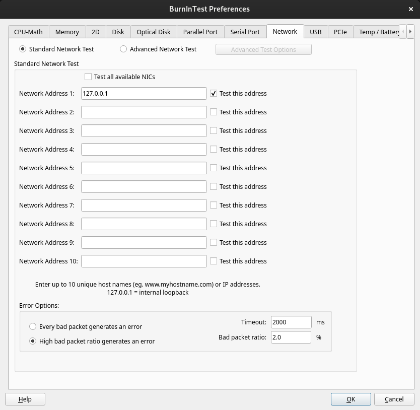

Network Preferences |
Top Previous Next |
|

Standard Network Test / Advanced Network Test Use these radio buttons to switch between using the standard and advanced network tests.
Advanced Test Options When the Advanced Network Test option is selected at the top of the Window, the “Advanced Test Options” button will be available. Clicking this button will open the Advanced Network Test Options Window and allow the options for the advanced test to be set.
Standard Network Test Test all available NICs This option will bind each entered address to a different available network card so the traffic will be correctly routed through each network card. If more network addresses are specified than there are network cards available an error will be displayed. If this option is not selected BurnInTest will not force the routing of test traffic and data routing will depend on the operating system routing table. When using this option each test IP needs to be different.
Network addresses Up to 10 network addresses can be entered for the simultaneous testing of the connection to 10 different locations. These connections can pass via different network interface cards (NIC) or the same one. Unless the "Test All" options is selected the NIC used will depend on the TCP/IP configuration set-up of your system. Each address must be a URL or an IP address and should be located on a different machine on the network.
A URL is the name of a network host, eg. www.hostname.com An IP address is a sequence of 4 numbers that correspond to a network host. eg. 169.192.0.1 If less than 6 addresses need to be tested uncheck the 'Test this address' check box.
The host selected must be accessible from the computer and capable of responding to the ‘ping’ command. See the Network Test description for more details. PassMark recommends the selection of a local host to minimize data link problems, which are fairly common on the Internet.
Error Options Every bad packet generates an error High bad packet ratio generates an error BurnInTest can either log an error for every bad (or missing) packet or can be set to only log an error when the number of errors exceed a threshold set by the user. This ratio is expressed as the percentage of bad packets compared to the overall number of packets sent, the first error will be flagged only after a certain number of packets have been sent.
Timeout This value determines how long BurnInTest will wait for a data packet to be sent or received before an error is reported. The value is measured in Milliseconds. 2000ms (2 seconds) is the default value.
Bad packet ratio Percentage of bad packets compared to the overall number of packets sent
|